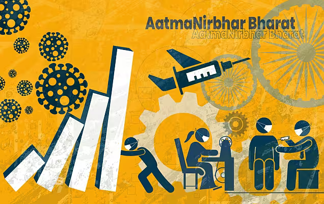

लक्ष्य बड़े हो रहे हैं । - भाग ६
“ कोरोना लॉकडाउन ”


अजय बहुत चिंतित था । अभी तो उसका प्रोबेशनरी कार्यकाल शुरू हुआ था कि कोरोना महामारी मे पूरा देश ही लॉक डाउन मे आ गया । हांलाकि उसके मन मे कहीं विश्वास है कि उसकी संस्था इस महामारी के रहते उसकी मदद करेगी किन्तु चिंता है कि जाती ही नहीं !
इसी उधेडबुन मे रहकर वह अपनी किताबों की अलमारी तक पहुंच गया और उसके पुस्तक हाथ “How to stop worrying and start living” पुस्तक पर पहुँच गए । सौभाग्य से पुस्तक का जो पन्ना जो उसने खोला वह चिंता के अध्ययन पर था । उसने यह सभी तथ्य एक कागज पर लिख लिये -
- समस्या से जुड़े सभी तथ्य जानो, उनका आकलन करो और निर्णय पर पहुँचो ।
- एक बार निर्णय ले लिया तो बिना परिणाम की चिंता किए कार्य शुरू करो ।
- निर्णय करने के लिए चार बाते याद रखो -
- समस्या क्या है ?
- समस्या के कारण क्या है ?
- संवाधित निदान (solution) क्या है ?
- सर्वोत्तम निदान (solution) क्या है ?
पुस्तक मे आगे बताया गया था कि चिंता चिता ना बन जाए इसलिए :
- व्यस्त रहे
- छोटीमोटी बातो को महत्व न दे
- याद रखे जीवन के अच्छे बुरे दिन बराबर ही आते है । यदि अच्छे दिन चले गए तो बुरे दिन कैसे रुकेंगे । जिस समस्या का कोई हल नही उसे स्वीकार कर हानि को कम करने की कोशिश करे ।
- तय कर ले कि यह समस्या अधिकतम क्या हानि कर सकते है और फिर चिंता कर उसे और न बढ़ाए । अतीत पहले ही घट चुका है । उसे बदला नही जा सकता । उसकी चिंता ना करे ।
अजय ने पुस्तक रख दिया और अपनी चिंता ‘कोरोना लॉक डाउन’ का अध्ययन शुरू किया । वह आयुष मंत्रालय की साइट पे गया और वहाँ से उसने कोरोना के सारी जानकारी डाउनलोड की । मुख्य बाते जो उसे समझ आई उसने लिख ली ।
कोरोना वायरस के लिए बताई गईं सावधानियां-
- स्वच्छ रहें और अपने आस-पास गंदगी न फैलने दें
- करीब 20 सेकेंड तक साबुन से अच्छी तरह हाथ धोएं.
- 1 लीटर गर्म पानी में मुस्ता, पर्पत, उशीर और चंदन जैसी चीजों को मिलाकर बॉटल में रख लें और प्यास लगने पर इसे पीएं.
- आंख, नाक या मुंह पर हाथ लगाने के पहले और तुरंत बाद हाथ धोएं.
- रोगी व्यक्ति के संपर्क में आने से बचें.
- खांसी या छींकते समय मुंह पर हाथ जरूर रखें. इसके बाद साबुन से हाथ अच्छी तरह धोएं.
- सार्वजनिक स्थल और कार्य स्थल के अलावा बाहर घूमते वक्त मुंह पर N95 मास्क जरूर पहनें.
- कोरोना वायरस के लक्षण दिखने पर मास्क पहनें और अपने नजदीकी अस्पताल में संपर्क करें.
अब वह चकित रह गया कि जिस कोरोना से वह इतना डरा था वह खुद तो चल फिर सकता नहीं । बिना उसकी भूल के कोरोना उस तक नहीं पहुँच सकता । ‘मुख पर मास्क और कीटाणु रहित हाथ’ उसे इस महामारी से सुरक्षित रखते है । अब उसे लगा कि उसके बाकी मित्र एजेंट्स और साथी भी तो ऐसे ही डरे होंगे तो उसने अपना फोन उठाया और सभी से बात की । यह सब करने के बाद उसे बहुत अच्छा महसूस हो रहा था । अब उसने फिर से अपनी सुबह की लिखी हुई लिस्ट निकाली । अब उसने विचार करना शुरू किया कि कोरोना उसको कहाँ कहाँ हानि पहुंचा रहा है । तो उसने वो सभी बाते लिखी और वह कैसे उनका प्रभाव कम कर सकता हैं ।
- कोरोना लॉक डाउन के चलते अजय किसी ग्राहक एजेंट से मिल नहीं सकता : अब जब उसका दृष्टिकोण (attitude) पोसिटिव हो चुका था तो उसे लगा कि व्हाट्सप्प, मैंसेज़र मैसेज और स्काइप पर उपलब्ध विडियोकॉल से बात की जा सकती है । यह समझ आते ही उसने अपने एजेंट और संभावित ग्राहको से बात करने के लिए टाइमटेबल बना डाला ।
- उसके सामने समस्या थी कि नए एजेंट की ट्रेनिंग कैसे होगा । उसने यूट्यूब पर “सेल्समणशिप इन हिन्दी” डाला तो सैकड़ो विडियो उसके सामने आ गए जिनमे से कुछ तो चालीस लाख बार देखे जा चुके थे । वह चकित रह गया और उसने खुद ही यह सब देखने का फैसला किया । देखने के बाद उसने चार विडियोस चुने जिन्हे वह हर बारी-बारी अपने एजेंट्स को भेजेगा ।
पहला विडियो व्हाट्सप्प करके अजय नहाने चला गया । वह नहाकर निकला ही था कि उसने देखा कि अधिकतर एजेंट्स ने मोबाइल पर धन्यवाद का संदेश भेजे थे । अजय चकित था कि जरा सा उसके सोच विचार के परिवर्तन ने सबकुछ बदल डाला । अब अजय ने अपने ब्रांच मैनेजर को फोन लगाया । वहाँ उसे पता लगा कि शाखा का अकाउंट नंबर 3 एनईएफ़टी डिटेल्स लेकर यदि उसमे ऑनलाइन पैसा डाला जाए तो आप नया बीमा कर सकते है । अजय बहुत शर्मिंदा हुआ कि जब वह निराश होकर घर मे बैठा था उसके साथी अप्रैल का नया खाता खोलकर बैठे थे । अब अजय ने तय किया कि मार्च के जितने भी प्रोस्पेक्टिंग बचे हुए है वह व्हाट्सप्प विडियो कॉल के द्वारा इन्हे पूरा करेगा । जैसे ही उसने सुबह के लिस्ट पे निगाह डाली तो उसने देखा कि अगला पॉइंट “MINIMISE THE LOSSES” था । उसकी समझ मे आ रहा था कि समस्या की सब से बड़ी ताकत हमारा कुछ न करना है । जैसे ही हम कुछ करना शुरू करते है समस्या घटने लगती है ।
यह सब करते करते अजय को लगा कि उसके एजेंट तो पढ़ रहे है क्या उसे इससे आगे कुछ और नहीं करना चाहिए । उसके दिमाग में आया कि क्यो न ट्रेनिंग मेन मिला साहित्य पढ़ा जाये ।
आज उसने कार्य योजना कैसे बनाये पढ़ना शुरू किया । इसमे कार्य क्षेत्र का प्रोफाइल बनाना था। यह जानकारी नेट पर उपलब्ध थी । वह यह देखकर चकित हुआ कि उसके क्षेत्र में कितने कम लोगों का बीमा हुआ है जबकि वह समझता था कि सभी का बीमा हो चुका है । अब उसे खोजना पड़ा कि वे कौन लोग है जिनका बीमा नहीं है । काफी रिपोर्ट पढ़ने पर उसे समझ मे आया कि अधिकांश व्यवसायी और नौकरी पेशा लोगो तक बीमा एजेंट पहुँच गये है किन्तु मेहनत मजदूरी करने वाले अथवा लीक से अलग काम करने वाले लोगों तक कोई जाना नही चाहता क्योकि यह कष्ट प्रद है और मिलने वाला बीमा अक्सर छोटा होता है ।
वह कुछ आगे सोचना चाहता था कि पत्नी ने कहा, “आज घर दुनिया को भूल ही जायेँगे क्या” ? अब अजय को याद आया कि वह भूखा है । चिंता थी तो भूख नहीं लगी अब व्यस्त हो गया तो फिर भूख नहीं लगी यह सोच वह मुस्कराते हुए खाने की मेज की ओर बढ़ गया ।
(मित्रो अजय ने अपनी चिंता का निदान खोजा आपने भी तो कुछ सोचा होगा आइये मिलकर कोरोना को तो मारें मगर अपनी आजिविका को नही । वक्त अच्छा हो या बुरा बीमा विक्रेता सिर्फ आगे बढ़ता है )